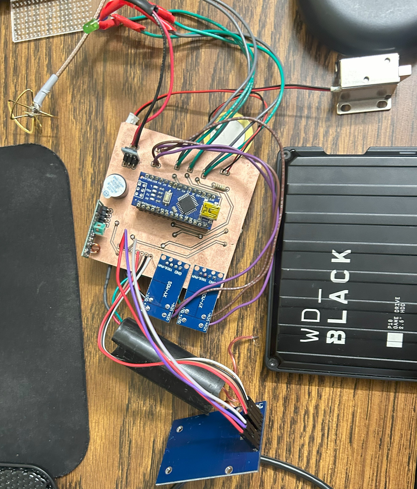
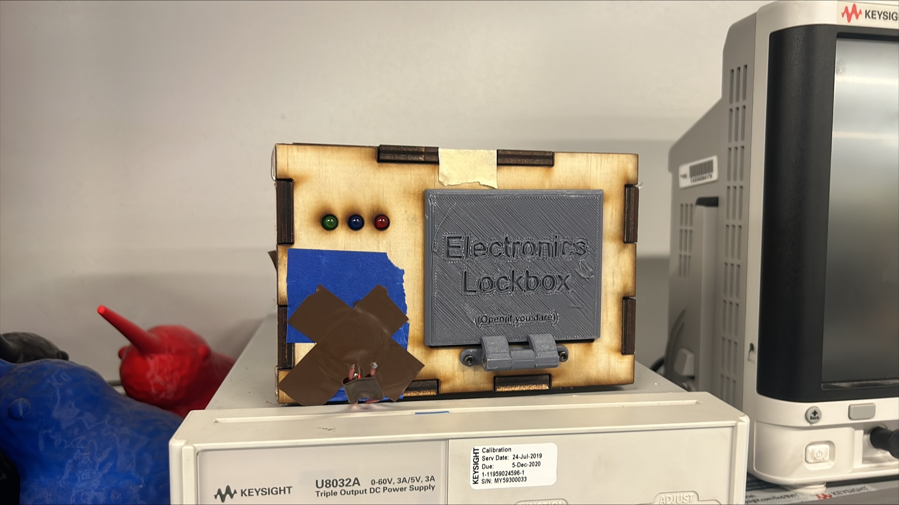

As a Prototyping Instructor (PI) at the Invention Studio, I pursued the role of Electronics Master. The final task was to design and build something to better the space. I decided to make a lockbox to secure the electronics cabinet keys, integrating RFID, RF remote control, a solenoid lock, and a spark gap deterrent.
Being part of the Electronics tool group was greatly rewarding because of the small family of engineers it consisted of. The lockbox would provide a solution usable by all of us via our student ID cards, enabling a way of locking up special equipment without making key access burdensome.

RFID Sensor: An MFRC522 RFID module (13.56 MHz) interfaces with university student ID cards using MIFARE protocol. Arduino code reads card UIDs and authenticates against a preprogrammed list stored in EEPROM.
MOSFET-Driven Solenoid: A 12V solenoid controlled by a MOSFET retracts when an authorized ID or RF signal is detected, unlocking the box.
RF Module: A 433 MHz RF module enables remote opening from a distance, adding convenience for key access.
Spark Gap Deterrence: A spark gap circuit generates a loud arc sound when an incorrect ID is scanned, using a high-voltage transformer driven by a PWM-controlled MOSFET.
I used SolidWorks to design a 3D-printed door and laser-cut MDF sides. Iterative prototypes addressed component fit and solenoid alignment, ensuring the lock mechanism operated smoothly.

The lockbox successfully secured the electronics cabinet keys, with the RFID system authenticating student IDs and the RF module enabling remote access. The spark gap deterrence activated consistently for unauthorized attempts. The device was adopted by our tool group, earning my spot as Electronics Master.